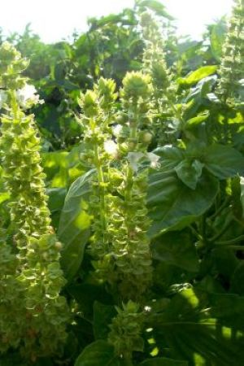
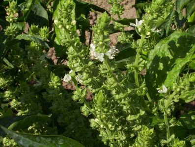
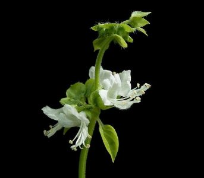

       <!--manège : css et html adaptés depuis la page https://juliencrego.com/astuces/slider-dimages-en-pur-css/, dernière consultation le 13 sept. 2025 -->
        <div class="slider">
            <div class="slider-viewport">
                <div id="img1">
                    <div id="img2">
                        <div id="img3">
                            <div class="slider-content">
                                
                                
                                
                            </div>
                        </div>
                    </div>
                </div>
            </div>
            <div class="slider-nav">
                <a href="#img1"></a>
                <a href="#img2"></a>
                <a href="#img3"></a>
            </div>
        </div>
        <b><label for="quantite">Ajouter
            <select name="quantite" id="quantite">
                <option value="0" selected>0 flacon</option>
                <option value="1">1 flacon</option>
                <option value="2">2 flacons</option>
                <option value="3">3 flacons</option>
                <option value="4">4 flacons</option>
                <option value="5">5 flacons</option>
            </select> de 5ml d'huile essentielle de <!--insérer l'HE--> au panier.</label></b>
    <!--fin du manège-->